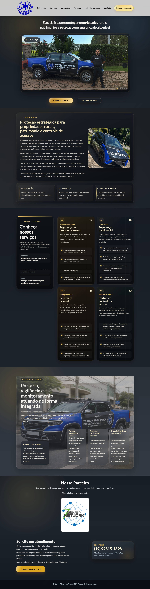

Yaacov Segurança
Uma presença que transmite confiança
O projeto
Desenvolvi o site institucional da Yaacov Segurança para apresentar a empresa e seus serviços de segurança privada com clareza e profissionalismo. O projeto reúne identidade visual, conteúdo e desenvolvimento em HTML, CSS e JavaScript para construir uma presença digital que transmita confiança desde o primeiro contato e facilite o acesso às informações sobre a empresa.
Direção visual
Criei a identidade visual pensando em remeter à segurança e passar credibilidade. As escolhas de cores, tipografia e composição foram pensadas para reforçar a sensação de proteção, solidez e profissionalismo. A hierarquia visual valoriza os serviços e organiza as informações, traduzindo o posicionamento da marca em uma interface consistente.
Acesso às informações
Priorizo a acessibilidade para que a clareza na apresentação dos serviços também se reflita na navegação. Esse cuidado inclui o uso da tecla Tab para percorrer links e demais elementos interativos pelo teclado, apoiando quem busca conhecer a empresa e encontrar seus canais de contato.
Conteúdo e experiência
Organizei o conteúdo para apresentar os serviços e as informações institucionais de forma clara, ajudando o visitante a conhecer a empresa e entender sua atuação. Animações ao rolar a página e destaques elegantes à passagem do cursor dão movimento à navegação. Essas interações valorizam os serviços e acompanham a descoberta do conteúdo, mantendo a leitura como foco da experiência.
